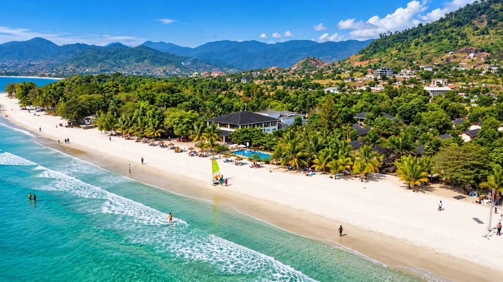
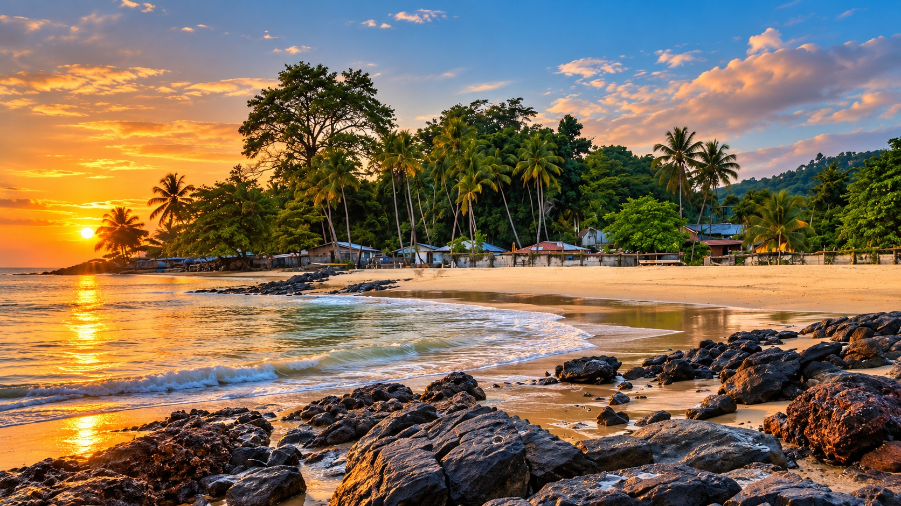
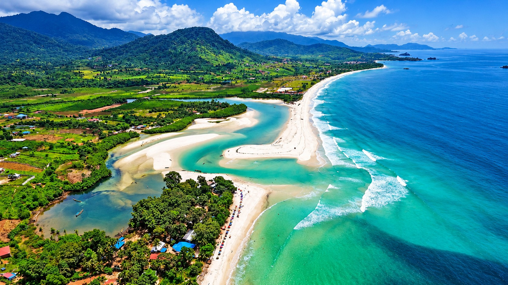
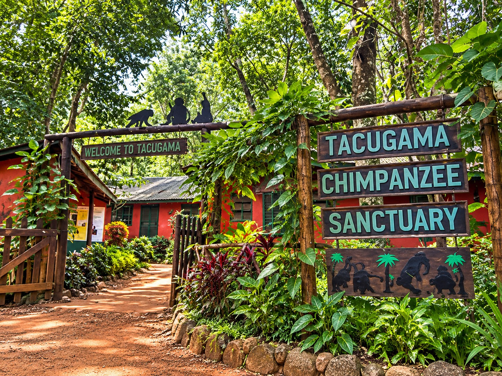
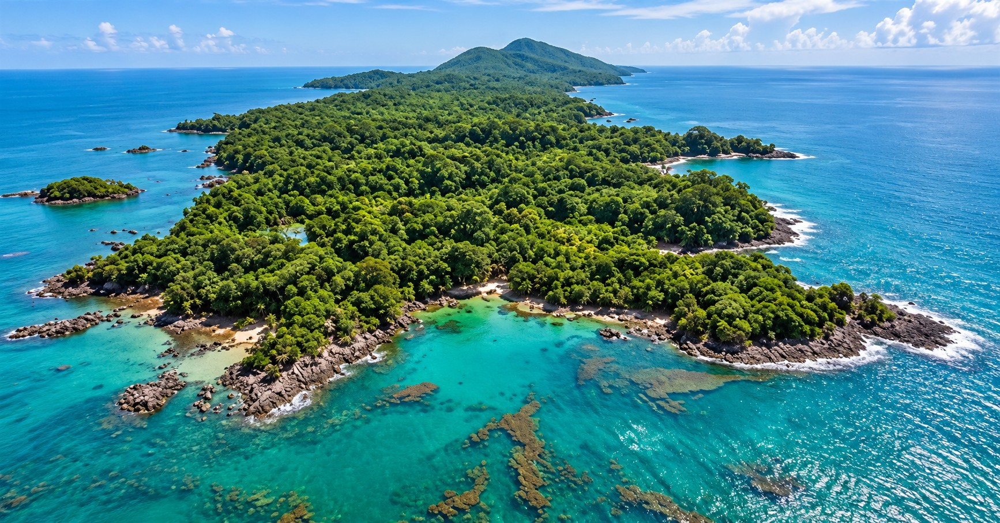
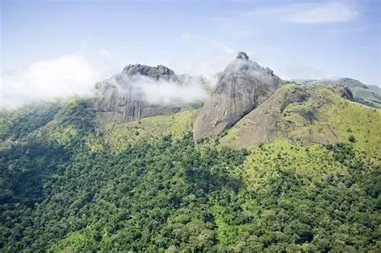

Explore Sierra Leone
Discover some of the beautiful places worth visiting across Sierra Leone.





No destinations found
Try choosing another category or location.
Learn More About Our Destinations
Tokeh Beach
Tokeh Beach is known for its beautiful sand, ocean views and relaxing coastal atmosphere.
Bunce Island
Bunce Island is an important historical site connected to the transatlantic slave trade.
River Number Two Beach
River Number Two Beach is a peaceful coastal destination known for its white sand and water.
Tacugama Sanctuary
Tacugama helps protect rescued chimpanzees and teaches visitors about conservation.
Banana Islands
The Banana Islands offer coastal scenery, island communities and historical interest.
Loma Mountains
The Loma Mountains are known for their natural scenery and highland landscapes.